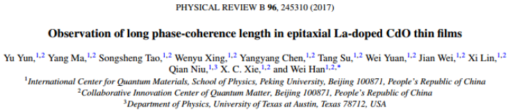
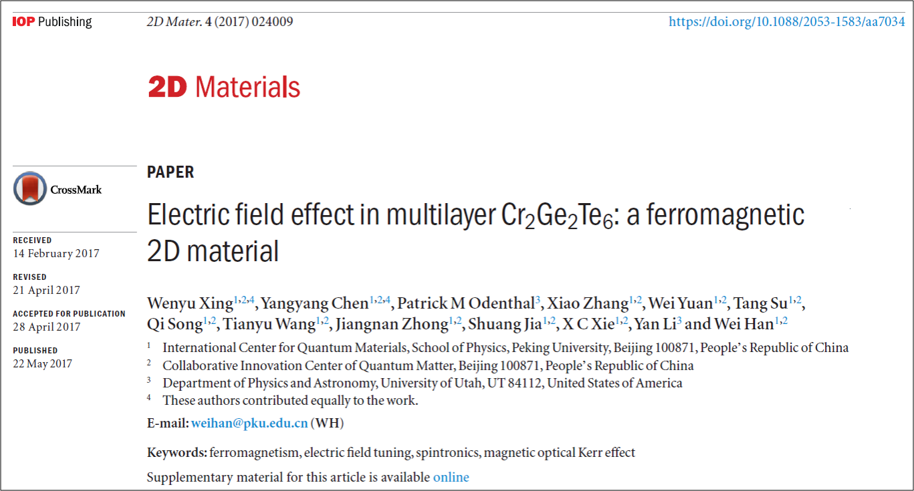

News
 2017
2017
Dec 26, 2017 Paper Published
Congratulations! Yu Yun and Yang Ma's paper titled "Observation of long phase-coherence length in epitaxial La-doped CdO thin films " has been published in Physical Review B. Link to the paper

Dec 18, 2017 Paper Published
Congratulations! Yangyang Chen、 Wenyu Xing and Xirui Wang's paper titled "Role of Oxygen in Ionic Liquid Gating on Two-Dimensional Cr2Ge2Te6: A Non-oxide Material" has been published in ACS Applied Materials & Interfaces. Link to the paper
Dec. 21, 2017 Seminar
Prof. Xiaofeng Jin visited our lab and gave a talk on "The Hall Effects Edwin Hall Never Imagined
".

Dec. 19, 2017 Seminar
Prof. Kai Liu visited our lab and gave a talk on "Nanomaterials Playground: Magnetic Skyrmions, Magneto-Ionics and Metal Foams
".

Nov. 01, 2017 Seminar
Prof. Jiang Xiao visited our lab and gave a talk on "Non-von Neumann Spin Wave Computing: A Theoretical Scheme
".

Oct. 11, 2017 Seminar
Prof. Hyunsoo Yang visited our lab and gave a talk on "SPIN WAVE, SKYRMION, AND SPIN-ORBIT TORQUE DEVICES
".

Sep. 26, 2017 Seminar
Prof. Mathias Kläui visited our lab and gave a talk on "Topological Spin Dynamics and Magnonic Spin Transport
".

Sep. 21, 2017 NSFC funding
Postdoc. Yu Yun was awarded the NSFC funding (青年基金) to study the interface modulation and properties characterization of ferromagnetic semiconductor oxide heterojunction thin films.
Aug. 30, 2017 Seminar
Prof. Hendrik Ohldag visited our lab and gave a talk on "Ultrafast and Very Small: Discover Nanoscale Magnetism With
Picosecond Time Resolution Using X-Rays
".
Aug. 22, 2017 Seminar
Prof. Yaroslav Tserkovnyak visited our lab and gave a talk on "Topological (spin) hydrodynamics in magnetic insulators".
May 22, 2017 Paper Published
Congratulations! Wenyu Xing and Yangyang Chen's paper titled "Electric field effect in multilayer Cr2Ge2Te6: a ferromagnetic 2D material" has been published in 2D Materials. Link to the paper

May 12, 2017 Paper Published
Congratulations! Tianyu Wang and Qi Song's paper titled 《自旋轨道转矩》 has been published in 物理. Link to the paper
Mar. 17, 2017 Paper Published
Congratulations! Qi Song and Hongrui Zhang's paper titled "Observation of inverse Edelstein effect in Rashba-split 2DEG between SrTiO3 and LaAlO3 at room temperature" has been published in Science Advances. Link to the paper
Jan. 1, 2017 Happy New Year!
Happy New Year! A big~big dinner in our group to celebrate the New Years Day.
Room East 404/504, Physics Building, No. 209 Chengfu Road, Haidian District, Peking University